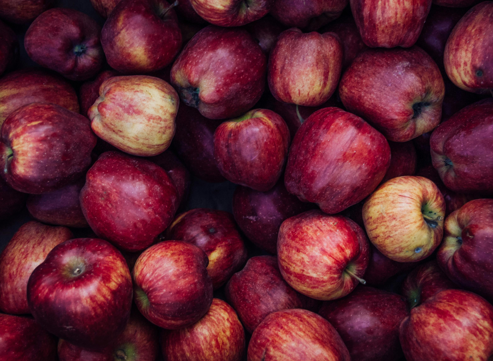
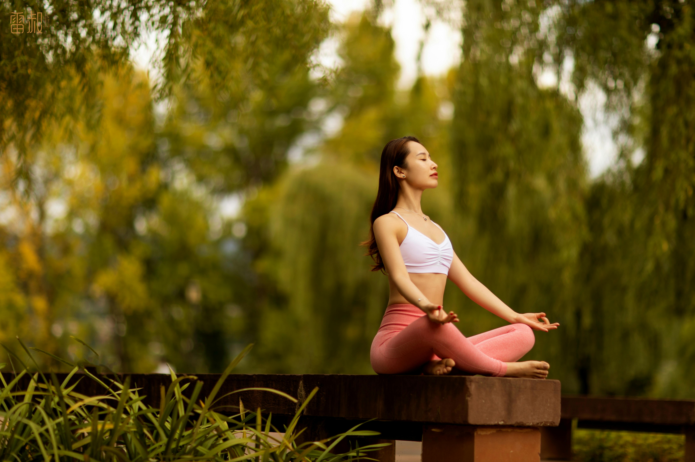

Seja bem-vindo(a) ao meu site de saúde e bem-estar! Aqui, você encontrará dicas e recomendações para ter uma melhor qualidade de vida.
Descubra o caminho para uma vida saudável e equilibrada. Bem-estar em primeiro lugar.


BEM-VINDO(A) AO MEU SITE!
Explore nossos recursos, dicas e artigos cuidadosamente elaborados para ajudá-lo em sua jornada de autocuidado.

Qual a importância dos cuidados à saúde?

Os cuidados com a saúde são fundamentais para uma vida plena e satisfatória. Eles incluem hábitos como alimentação saudável, exercícios físicos, sono adequado, gerenciamento do estresse e visitas regulares ao médico.
Cuidar da saúde previne doenças, reduz custos médicos, melhora o bem-estar emocional, aumenta a produtividade, fortalece os relacionamentos e contribui para uma vida longa e autônoma. Em resumo, investir na saúde é essencial para uma vida feliz e produtiva.
E que tal ao ar livre?
Estar ao ar livre oferece uma série de qualidades únicas que contribuem para o bem-estar geral. Respirar ar fresco pode revigorar e refrescar, enquanto a exposição à luz solar promove a produção de vitamina D e melhora o humor. Além disso, estar cercado pela natureza ajuda a reduzir o estresse, aumenta a sensação de calma e promove a saúde mental.
A natureza oferece uma variedade de cenários para explorar, estimulando a curiosidade e fornecendo experiências únicas de aprendizado e descoberta. Em resumo, estar ao ar livre não apenas nutre o corpo, mas também a mente e o espírito, proporcionando uma sensação de bem-estar holístico.
O que fazer para cuidar da saúde?
Cuidar da sua saúde é uma jornada que envolve cuidados físicos, mentais e emocionais. É um compromisso consigo mesmo para garantir que você possa desfrutar de uma vida plena e satisfatória. Aqui estão algumas maneiras de cuidar da sua saúde em todos os aspectos:
- Alimentação balanceada: Priorize alimentos naturais e evite alimentos processados.
- Atividade física regular: Mantenha-se ativo com exercícios que você goste.
- Descanso adequado: Estabeleça uma rotina de sono regular para uma boa saúde mental e física.
- Gerenciamento do estresse: Encontre formas saudáveis de lidar com o estresse, como meditação ou hobbies relaxantes.
- Cuidado com a saúde mental: Priorize sua saúde emocional e busque apoio quando necessário.
- Check-ups médicos regulares: Faça exames médicos de rotina para monitorar sua saúde.
- Evite hábitos prejudiciais: Reduza o consumo de álcool, não fume e evite drogas ilegais.
- Pratique boa higiene pessoal: Lave as mãos regularmente e mantenha uma boa higiene bucal.
- Busque equilíbrio: Reserve tempo para relaxar e se divertir.
- Seja proativo: Comece a cuidar da sua saúde agora mesmo, fazendo pequenas mudanças positivas em sua rotina diária.

Como ter uma alimentação saudável?
Uma
alimentação saudável é fundamental para promover o bem-estar e a vitalidade do corpo. É uma
questão
não apenas de escolha dos alimentos certos, mas também de cultivar hábitos e
mentalidades
que apoiam uma relação positiva com a comida.

Em primeiro lugar, é importante priorizar uma variedade de alimentos em cada refeição.
Isso
significa incluir uma ampla gama de frutas, legumes, cereais integrais, proteínas magras e
laticínios com baixo teor de gordura. Cada grupo alimentar oferece nutrientes essenciais que o
corpo
precisa para funcionar de forma otimizada.
Além disso, é fundamental o tamanho das porções. A prática de comer com moderação ajuda a
evitar excessos e a manter um equilíbrio saudável. Aprender a reconhecer os sinais de fome e
saciedade é crucial para garantir que estamos dando ao nosso corpo a quantidade certa de
comida de que ele precisa.
 Outro aspecto importante é dar preferência aos alimentos integrais em vez dos
processados. Os
alimentos integrais são ricos em fibras, vitaminas e minerais, proporcionando benefícios
duradouros
para a saúde. Evitar alimentos processados, que muitas vezes são carregados com açúcares
adicionados, gorduras saturadas e aditivos, é uma escolha inteligente para manter-se saudável.
Outro aspecto importante é dar preferência aos alimentos integrais em vez dos
processados. Os
alimentos integrais são ricos em fibras, vitaminas e minerais, proporcionando benefícios
duradouros
para a saúde. Evitar alimentos processados, que muitas vezes são carregados com açúcares
adicionados, gorduras saturadas e aditivos, é uma escolha inteligente para manter-se saudável.
A hidratação adequada também desempenha um papel crucial em uma alimentação saudável.
Beber
bastante água ao longo do dia ajuda a manter o corpo hidratado e a apoiar todas as funções
vitais.
Optar por água, chá ou sucos naturais em vez de bebidas açucaradas ou refrigerantes é uma
maneira
fácil de melhorar a qualidade da sua dieta.
 Além disso, reduzir o consumo de açúcares e gorduras saturadas é essencial para uma
alimentação saudável. Escolher fontes de carboidratos complexos, como frutas, legumes e grãos
integrais, em vez de alimentos com alto teor de açúcar, ajuda a manter os níveis de energia
estáveis
e promove uma sensação de saciedade duradoura. Da mesma forma, optar por fontes de gorduras
saudáveis, como abacates, nozes e peixes ricos em ômega-3, em vez de gorduras saturadas,
pode beneficiar a saúde do coração e reduzir o risco de doenças crônicas.
Além disso, reduzir o consumo de açúcares e gorduras saturadas é essencial para uma
alimentação saudável. Escolher fontes de carboidratos complexos, como frutas, legumes e grãos
integrais, em vez de alimentos com alto teor de açúcar, ajuda a manter os níveis de energia
estáveis
e promove uma sensação de saciedade duradoura. Da mesma forma, optar por fontes de gorduras
saudáveis, como abacates, nozes e peixes ricos em ômega-3, em vez de gorduras saturadas,
pode beneficiar a saúde do coração e reduzir o risco de doenças crônicas.
Por fim, o planejamento das refeições desempenha um papel importante na manutenção de uma
alimentação saudável. Fazer um plano semanal de refeições e preparar alimentos saudáveis com
antecedência pode ajudar a evitar escolhas impulsivas e garantir que você tenha opções saudáveis
disponíveis quando estiver com fome.
Em resumo, uma alimentação saudável é uma questão de equilíbrio, moderação e escolhas
conscientes. Ao priorizar alimentos integrais, controlar o tamanho das porções,
manter-se
hidratado e fazer escolhas alimentares informadas, você pode apoiar a saúde do seu corpo e
desfrutar
de uma vida mais vibrante e energética.
Bora se exercitar? 💪
A prática regular de exercícios físicos desempenha um papel fundamental na
promoção da saúde e do bem-estar em todas as faixas etárias. Os benefícios de se
exercitar
vão além da simples manutenção do peso corporal, abrangendo diversos aspectos da saúde física,
mental e emocional.
Em primeiro lugar, os exercícios ajudam a fortalecer o sistema cardiovascular, reduzindo o risco
de
doenças cardíacas, pressão alta e acidente vascular cerebral. O aumento da frequência cardíaca
durante o exercício melhora a circulação sanguínea, fornecendo oxigênio e nutrientes essenciais
para
todas as partes do corpo.
Além disso, a prática regular de atividades físicas contribui para o controle do peso corporal,
ajudando na queima de calorias e na manutenção de uma composição corporal saudável. Combinado
com
uma alimentação equilibrada, o exercício pode ser uma ferramenta eficaz para prevenir a
obesidade e
suas complicações associadas, como diabetes tipo 2 e problemas articulares.
Os benefícios dos exercícios também se estendem ao sistema musculoesquelético, fortalecendo
ossos,
músculos e articulações e reduzindo o risco de osteoporose e lesões. Além disso, a prática
regular
de exercícios pode melhorar a flexibilidade, a coordenação e o equilíbrio, o que é especialmente
importante à medida que envelhecemos para prevenir quedas e manter a independência funcional.
No aspecto mental e emocional, os exercícios têm um impacto significativo na saúde do
cérebro,
ajudando a melhorar o humor, reduzir o estresse e a ansiedade, e aumentar a sensação de
bem-estar geral. Durante a prática de atividades físicas, o corpo libera endorfinas,
neurotransmissores responsáveis pela sensação de felicidade e euforia, proporcionando alívio do
estresse e melhorando a saúde mental.

Além disso, o exercício regular pode promover a saúde cognitiva, melhorando a memória, a
concentração e a função cerebral. Estudos mostram que pessoas que se exercitam regularmente
têm
um menor risco de desenvolver doenças neurodegenerativas, como Alzheimer e demência.
Em resumo, fazer exercícios regularmente é essencial para promover a saúde e o bem-estar em
todas
as áreas da vida. Seja qual for o seu nível de condicionamento físico ou idade,
encontrar
uma atividade física que você goste e que se encaixe na sua rotina diária pode trazer inúmeros
benefícios para a sua saúde física, mental e emocional a longo prazo.
Cuide de seu bem estar!
O bem-estar é um estado de equilíbrio e harmonia entre diferentes aspectos da
nossa
vida, incluindo físico, mental, emocional e social. É uma sensação de satisfação e realização
que
resulta de cuidar de nós mesmos e viver em consonância com nossos valores e objetivos.
No aspecto físico, o bem-estar envolve cuidar do nosso corpo através de hábitos saudáveis, como
alimentação equilibrada, exercícios regulares, sono adequado e evitar hábitos
prejudiciais,
como tabagismo e consumo excessivo de álcool. Quando nos sentimos bem fisicamente, estamos mais
aptos a enfrentar os desafios do dia a dia e desfrutar da vida ao máximo.
Além disso, o bem-estar mental é essencial para uma vida plena e satisfatória. Isso envolve
cultivar
uma mente tranquila e resiliente, desenvolvendo habilidades de enfrentamento saudáveis para
lidar
com o estresse e as adversidades da vida. Práticas como meditação,
mindfulness¹. e terapia
podem ajudar a promover o equilíbrio emocional e a reduzir a ansiedade e a depressão.
O bem-estar emocional também é crucial para uma vida feliz e satisfatória. Isso significa estar
em
sintonia com nossas emoções, expressá-las de forma saudável e construir relacionamentos
positivos e
significativos com os outros. Ter um sistema de apoio forte e saber quando pedir ajuda são
aspectos
importantes do bem-estar emocional.
Além disso, o bem-estar social refere-se à qualidade dos nossos relacionamentos e conexões com
os
outros. Manter laços sociais saudáveis, cultivar amizades e participar de atividades
comunitárias
são maneiras de promover o bem-estar social e sentir-se parte de algo maior do que nós mesmos.
Por fim, o bem-estar espiritual diz respeito ao nosso sentido de propósito e significado na
vida.
Isso pode incluir conexões com valores pessoais, práticas espirituais, criatividade e uma
sensação
de conexão com algo maior do que nós mesmos.
Em resumo, o bem-estar é um estado de equilíbrio e harmonia em todas as áreas da nossa
vida.
Cuidar de nós mesmos em níveis físico, mental, emocional, social e espiritual nos ajuda a viver
com
mais plenitude, felicidade e realização.
Notas de Rodapé:
- Mindfulness¹: Mindfulness é a prática de estar totalmente presente no momento, observando pensamentos, sentimentos e sensações sem julgá-los. Essa técnica é usada para reduzir o estresse e melhorar o bem-estar.